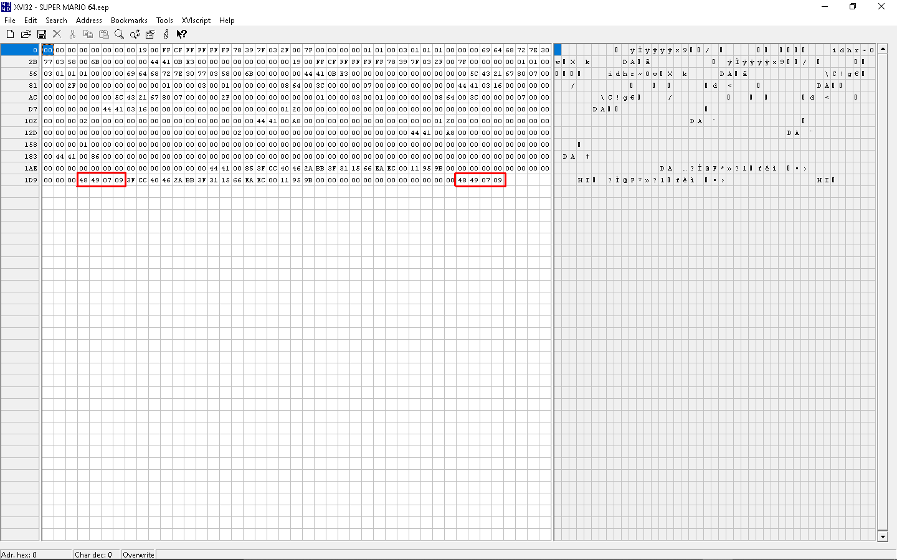

Signature
- 0x1C-0x1D (uint16): The Magic Number - This number is used in the checkSum as an extra percaution to prevent corruption. If the checksum was lower than this number it would know that it was corrupted.
- 0x1E-0x1F (uint16): CheckSum - This varible was used to detect if the save file was corrupted. It does this by adding up all of the numbers in the current save file and then storing it in the CheckSum. When the game boots up it will calculate the checksum and if it does not match the checksum that is stored on the cartridge it will restore a backup of the menu save
Visual Map
